Visualization Foundations
Visualization is one of the most important tools in data science.
A good plot helps reveal structure, compare groups, identify unusual values, and communicate findings clearly.
But visualization is not only about producing charts.
It is also about learning how to read evidence from patterns.
In this lesson, we focus on foundational plot types that appear in real analytical workflows. We use the wrangled Iris dataset from Chapter 04 so that the visualization step builds on the outputs already produced by the system.
Lesson overview
By the end of this lesson, you will be able to:
- create histograms, density plots, ECDF plots, boxplots, violin plots, scatter plots, heatmaps, and pairplots
- compare numeric distributions across groups
- compare alternative figures for the same analytical question
- use color to represent categories clearly
- interpret patterns, spread, overlap, and separation
- save figures as reusable analysis outputs
- run a reusable plotting script from the command line
Chapter workflow
This chapter introduces the fourth reusable Python script in the system:
05-visualization-basics.qmd
↓
scripts/python/plot_example_data.py
↓
data/iris_wrangled.csv
results/figures/
results/figures/figure-index.tsvThe figures produced here support interpretation and reporting in later chapters.
Build a visual story
A useful collection of figures should feel like a guided story rather than a random gallery.
In this chapter, the story moves through five questions:
- What does one variable look like?
- How do its distributions differ across species?
- How do groups compare in center, spread, and individual observations?
- How are two measurements related?
- What broader multivariable structure is visible?
Different plots can answer the same question from different angles. Showing more than one view is especially valuable when each view reveals something the others hide.
Load the wrangled dataset
We use the wrangled dataset prepared in Chapter 04.
import pandas as pd
import matplotlib.pyplot as plt
import seaborn as sns
df = pd.read_csv("data/iris_wrangled.csv")
df.head()Inspect the variables
Before plotting, confirm the structure of the dataset.
print("Shape:", df.shape)
print("\nColumns:", df.columns.tolist())
print("\nData types:")
print(df.dtypes)Interpretation
Before making plots, ask:
- which variables are numeric?
- which variable defines the groups?
- which comparisons are likely to be meaningful?
- which derived features are available from the wrangling step?
For the Iris dataset, the numeric flower measurements, the derived petal_area, and the categorical species variable support both distribution plots and grouped comparisons.
Histogram
Histograms help us understand the distribution of a single numeric variable.
fig, ax = plt.subplots(figsize=(8, 5.5))
sns.histplot(
data=df,
x="sepal_length",
bins=12,
kde=True,
ax=ax
)
ax.set_title("Distribution of Sepal Length")
ax.set_xlabel("Sepal Length")
ax.set_ylabel("Count")
plt.show()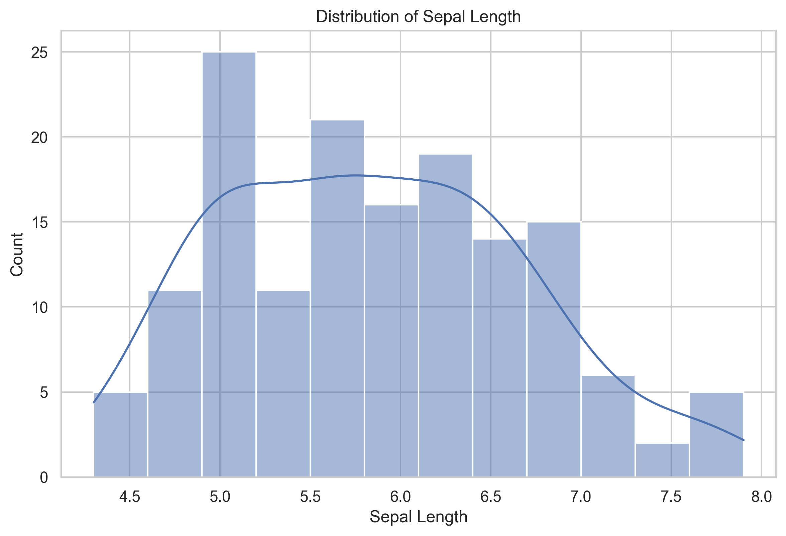
Interpretation
When reading a histogram, look for:
- the center of the distribution
- the spread of values
- skewness
- possible multiple peaks
If a variable shows multiple peaks, this may suggest the presence of meaningful subgroups.
Three views of one distribution
A histogram is familiar, but it is not the only way to examine a numeric distribution. The following three-panel figure shows the same sepal_length values as a histogram, a density curve, and an empirical cumulative distribution function (ECDF).
fig, axes = plt.subplots(1, 3, figsize=(15, 4.5))
sns.histplot(data=df, x="sepal_length", bins=12, ax=axes[0])
axes[0].set_title("Histogram")
axes[0].set_ylabel("Count")
sns.kdeplot(data=df, x="sepal_length", fill=True, ax=axes[1])
axes[1].set_title("Density")
axes[1].set_ylabel("Density")
sns.ecdfplot(data=df, x="sepal_length", ax=axes[2])
axes[2].set_title("ECDF")
axes[2].set_ylabel("Proportion at or below")
fig.suptitle("Three Views of Sepal Length", y=1.03)
plt.tight_layout()
plt.show()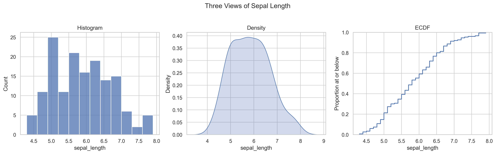
Interpretation
- The histogram makes frequencies and possible peaks easy to see, but its appearance depends on the selected bins.
- The density plot emphasizes the overall shape, but smoothing can hide small details.
- The ECDF shows the proportion of observations at or below any value without requiring bins or smoothing.
These are alternatives, not competitors. The best choice depends on the question and the audience.
Boxplot
Boxplots summarize a distribution using the median, quartiles, and possible outliers.
fig, ax = plt.subplots(figsize=(8, 5.5))
sns.boxplot(
data=df,
x="species",
y="sepal_length",
ax=ax
)
ax.set_title("Sepal Length by Species")
ax.set_xlabel("Species")
ax.set_ylabel("Sepal Length")
plt.show()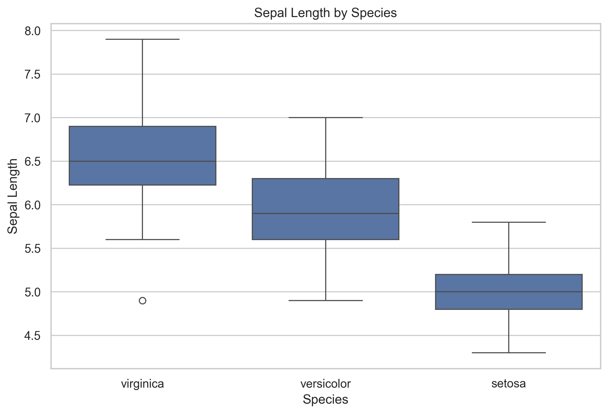
Interpretation
A boxplot helps compare groups by showing:
- differences in typical values through the median
- variation within each group
- possible outliers
- overlap across groups
If two groups overlap strongly, that variable alone may not separate them well.
Scatter plot
Scatter plots show the relationship between two numeric variables.
fig, ax = plt.subplots(figsize=(8, 5.5))
sns.scatterplot(
data=df,
x="sepal_length",
y="petal_length",
hue="species",
s=70,
alpha=0.8,
ax=ax
)
ax.set_title("Sepal Length vs Petal Length")
ax.set_xlabel("Sepal Length")
ax.set_ylabel("Petal Length")
plt.show()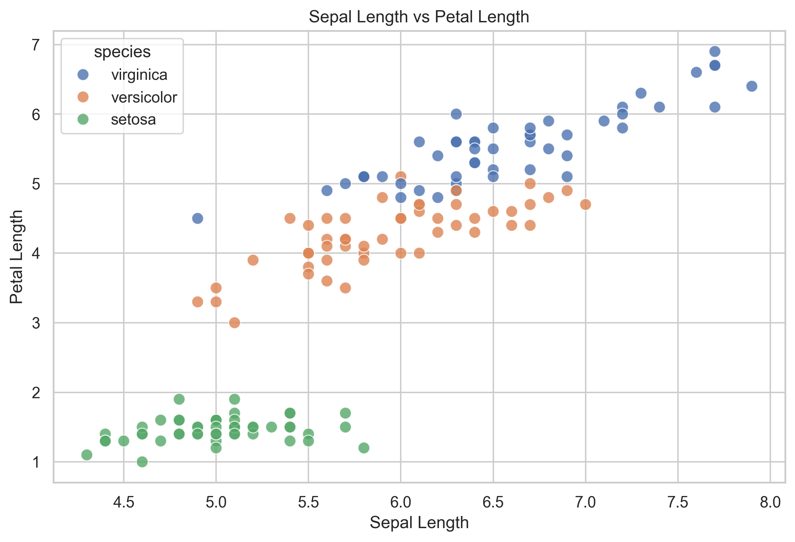
Interpretation
Scatter plots help you evaluate:
- whether two variables move together
- whether groups form distinct clusters
- whether the pattern appears linear or non-linear
- whether any observations appear unusual
In many datasets, scatter plots are among the fastest ways to detect group structure.
Grouped histogram
A grouped histogram helps compare distributions across categories.
fig, ax = plt.subplots(figsize=(8, 5.5))
sns.histplot(
data=df,
x="petal_length",
hue="species",
bins=15,
kde=True,
ax=ax
)
ax.set_title("Petal Length Distribution by Species")
ax.set_xlabel("Petal Length")
ax.set_ylabel("Count")
plt.show()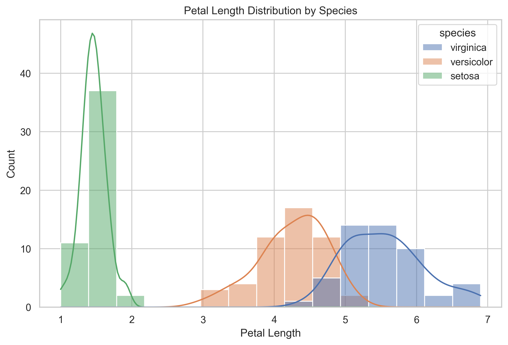
Interpretation
This plot helps compare whether groups differ in:
- location
- spread
- overlap
- shape of the distribution
If one group’s values occupy a clearly different range, that variable may be useful for distinguishing between groups.
Small-multiple histograms
Overlaid distributions can become crowded. Small multiples give every species its own panel while preserving a common scale.
g = sns.displot(
data=df,
x="petal_length",
col="species",
col_wrap=3,
bins=10,
kde=True,
height=3.5,
aspect=1
)
g.set_axis_labels("Petal Length", "Count")
g.set_titles("{col_name}")
g.fig.suptitle("Petal Length Distribution within Each Species", y=1.05)
plt.show()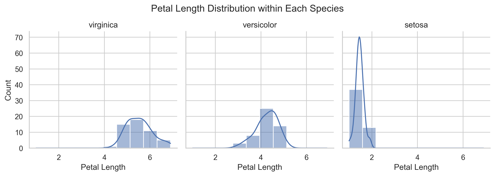
Interpretation
The grouped histogram is best for seeing overlap directly. The small-multiple version is often easier for comparing the shape and spread within each group. Using both views shows that setosa is clearly separated, while versicolor and virginica retain some overlap.
Derived feature plot
Because Chapter 04 created petal_area, we can now visualize it directly.
fig, ax = plt.subplots(figsize=(8, 5.5))
sns.boxplot(
data=df,
x="species",
y="petal_area",
ax=ax
)
sns.stripplot(
data=df,
x="species",
y="petal_area",
color="black",
alpha=0.55,
size=4,
jitter=0.22,
ax=ax
)
ax.set_title("Petal Area by Species")
ax.set_xlabel("Species")
ax.set_ylabel("Petal Area")
plt.show()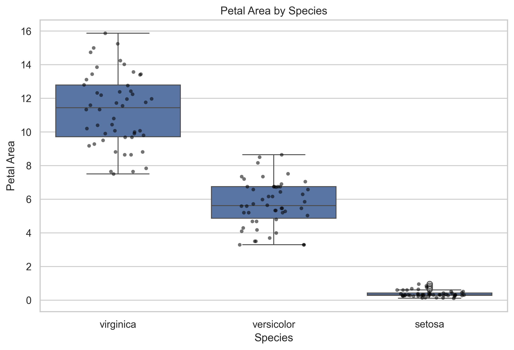
Interpretation
This plot connects wrangling to visualization.
A derived feature is only useful if it helps answer a question or clarify a pattern. Here, petal_area gives a compact petal-size measure that separates species more clearly than many sepal-based comparisons.
Boxplot and violin plot comparison
Boxplots and violin plots summarize the same grouped distributions in different ways.
fig, axes = plt.subplots(1, 2, figsize=(13, 5.5), sharey=True)
sns.boxplot(data=df, x="species", y="petal_area", ax=axes[0])
axes[0].set_title("Boxplot")
axes[0].set_xlabel("Species")
axes[0].set_ylabel("Petal Area")
sns.violinplot(
data=df,
x="species",
y="petal_area",
inner="quartile",
cut=0,
ax=axes[1]
)
sns.stripplot(
data=df,
x="species",
y="petal_area",
color="black",
alpha=0.4,
size=3,
jitter=0.16,
ax=axes[1]
)
axes[1].set_title("Violin Plot with Observations")
axes[1].set_xlabel("Species")
axes[1].set_ylabel("")
fig.suptitle("Two Views of Petal Area by Species", y=1.02)
plt.tight_layout()
plt.show()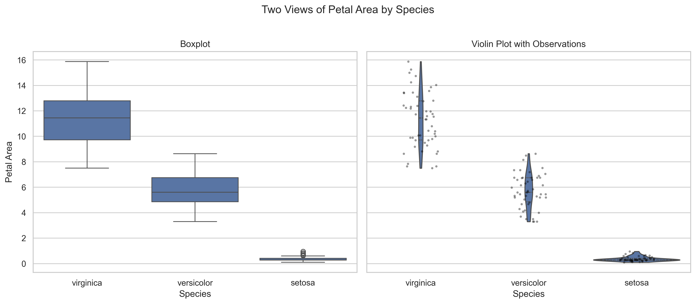
Interpretation
The boxplot gives a compact summary of the median and quartiles. The violin plot reveals the estimated distribution shape, while the overlaid points keep the individual observations visible. For small datasets, displaying the observations helps prevent a smooth distribution from appearing more precise than the data support.
Scatter plot with trend lines
The earlier scatter plot emphasizes clusters. Adding a separate trend line for each species helps compare within-group relationships.
g = sns.lmplot(
data=df,
x="sepal_length",
y="petal_length",
hue="species",
height=5.5,
aspect=1.35,
scatter_kws={"s": 55, "alpha": 0.75},
ci=None
)
g.set_axis_labels("Sepal Length", "Petal Length")
g.fig.suptitle("Within-Species Trends: Sepal Length vs Petal Length", y=1.03)
plt.show()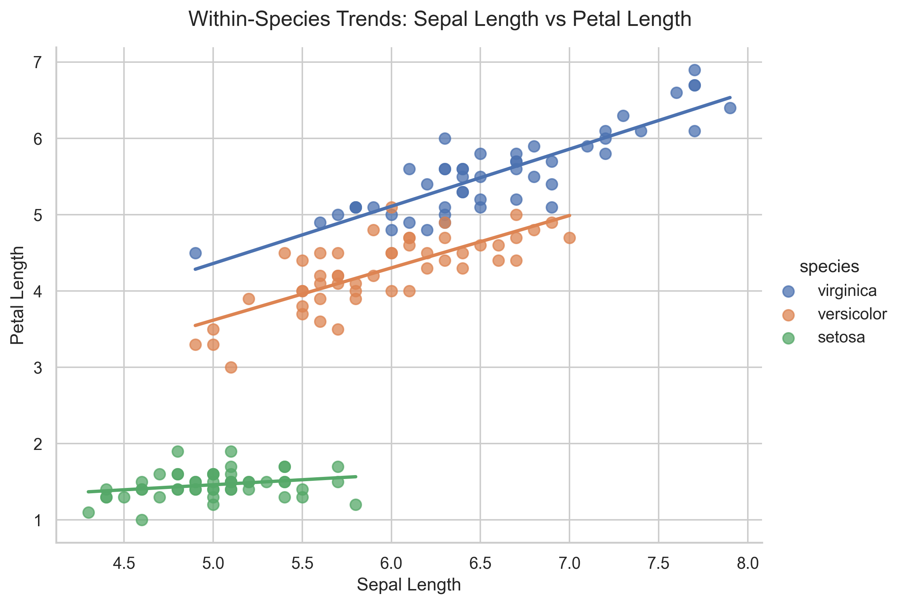
Interpretation
The overall upward pattern partly reflects differences between species. Within-species trend lines help separate that group structure from the relationship observed inside each species. A visible overall association does not always mean the same relationship is equally strong within every group.
Correlation heatmap
A correlation heatmap provides a compact overview of linear relationships among all numeric features.
numeric_columns = [
"sepal_length",
"sepal_width",
"petal_length",
"petal_width",
"petal_area"
]
correlations = df[numeric_columns].corr()
fig, ax = plt.subplots(figsize=(8, 6.5))
sns.heatmap(
correlations,
annot=True,
fmt=".2f",
cmap="vlag",
center=0,
vmin=-1,
vmax=1,
square=True,
ax=ax
)
ax.set_title("Correlation among Iris Numeric Features")
plt.tight_layout()
plt.show()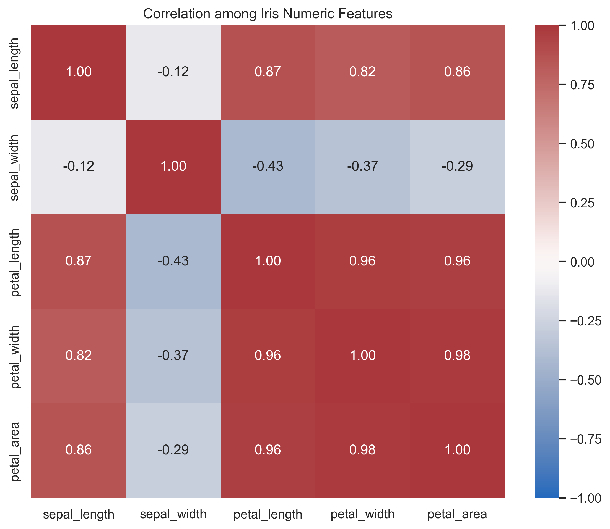
Interpretation
Petal length, petal width, and petal area are strongly related. This agrees with the scatter plots and helps identify features that may carry similar information. Correlation summarizes linear association; it does not explain causation or replace inspection of the underlying points.
Pairplot overview
Pairplots provide a compact view of multiple variable relationships at once.
g = sns.pairplot(
df[[
"sepal_length",
"sepal_width",
"petal_length",
"petal_width",
"petal_area",
"species"
]],
hue="species",
corner=True,
plot_kws={"alpha": 0.7}
)
g.fig.suptitle("Iris — Pairwise Relationships by Species", y=1.02)
plt.show()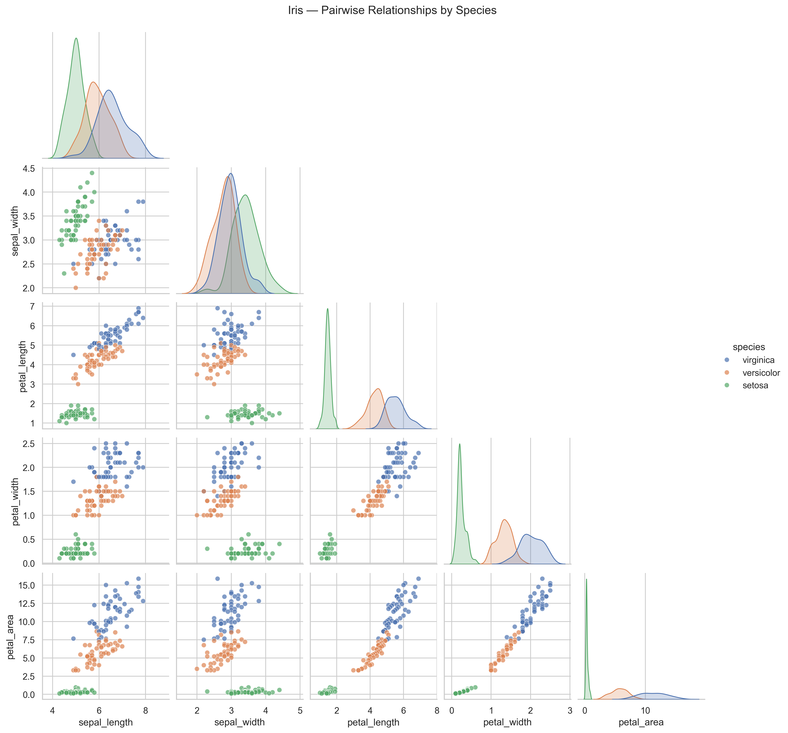
Interpretation
Pairplots help answer broader questions such as:
- which variables best separate species?
- which features appear strongly related?
- which measurements appear redundant?
- where groups overlap and where they separate clearly?
This is often one of the most useful first multivariate views of a dataset.
Reading visual evidence carefully
A plot is only useful if it is interpreted carefully.
When reading a figure, ask:
- what question does this plot help answer?
- what pattern is visible?
- how strong is the pattern?
- is there overlap, uncertainty, or ambiguity?
- does this align with earlier summaries?
Visualization should support reasoning, not replace it.
Visualization principles
Strong foundational plots share a few key qualities:
- clear titles and labels
- readable axes
- purposeful use of color
- minimal clutter
- plot choice matched to the question
A histogram is useful for one-variable distributions.
A boxplot is useful for comparing distributions across groups.
A scatter plot is useful for relationships between two variables.
A pairplot is useful for quick multivariate exploration.
Validation through visualization
Plots can also function as validation tools.
Use them to check:
- whether distributions look plausible
- whether outliers need review
- whether grouped differences are real or mostly overlap
- whether patterns are consistent with earlier cleaning and wrangling steps
Visualization often reveals issues that summary tables alone can miss.
Run the reusable plotting script
The manual plotting examples above explain the logic. The reusable script creates and saves a standard figure set.
Run this from the project root:
python scripts/python/plot_example_data.py data/iris_wrangled.csv results/figuresExpected outputs:
results/figures/
├── histogram-sepal-length.png
├── distribution-views-sepal-length.png
├── boxplot-sepal-length-by-species.png
├── scatter-sepal-length-vs-petal-length.png
├── histogram-petal-length-by-species.png
├── small-multiples-petal-length-by-species.png
├── boxplot-petal-area-by-species.png
├── comparison-petal-area-by-species.png
├── scatter-trends-by-species.png
├── correlation-heatmap.png
├── pairplot-iris-by-species.png
└── figure-index.tsvWhat the plotting script does
The script:
- reads the wrangled input table
- validates required columns
- creates a varied set of exploratory and comparison figures
- saves figures as
.pngfiles - writes a figure index table with filenames and descriptions
The figure index helps later reporting chapters refer to plots consistently.
Exercise
Try the following:
- Open
results/figures/figure-index.tsv. - Open
results/figures/boxplot-petal-area-by-species.png. - Compare the boxplot and violin plot of
petal_area. - Create a scatter plot of
sepal_widthversuspetal_width. - Plot both a histogram and an ECDF of
petal_width. - Write one sentence describing which figure most clearly shows species separation and explain why.
fig, ax = plt.subplots(figsize=(8, 5.5))
sns.scatterplot(
data=df,
x="sepal_width",
y="petal_width",
hue="species",
s=70,
alpha=0.8,
ax=ax
)
ax.set_title("Sepal Width vs Petal Width")
ax.set_xlabel("Sepal Width")
ax.set_ylabel("Petal Width")
plt.show()
fig, axes = plt.subplots(1, 2, figsize=(12, 5))
sns.histplot(data=df, x="petal_width", bins=12, ax=axes[0])
axes[0].set_title("Histogram of Petal Width")
axes[0].set_xlabel("Petal Width")
axes[0].set_ylabel("Count")
sns.ecdfplot(data=df, x="petal_width", ax=axes[1])
axes[1].set_title("ECDF of Petal Width")
axes[1].set_xlabel("Petal Width")
axes[1].set_ylabel("Proportion at or below")
plt.tight_layout()
plt.show()
print(
"The pairplot most clearly shows overall species separation because "
"it compares several feature combinations in one coordinated view."
)CDI Insight
Visualization is not about producing more plots.
It is about choosing the right view of the data to support understanding.
A clear plot reduces uncertainty. A poor plot can introduce it.
In CDI systems, figures should be reproducible outputs, not temporary screenshots. A saved figure, a figure index, and the script that produced them make visual evidence easier to review and reuse.
Summary
In this lesson, you:
- used a varied set of foundational plot types to explore the Iris dataset
- compared multiple visual choices for the same question
- compared distributions within and across species
- examined relationships between numeric variables
- visualized the derived
petal_areafeature - used a heatmap and pairplot to inspect multivariable structure
- used visual patterns to support interpretation
- saved reusable figures with
plot_example_data.py - created
results/figures/figure-index.tsv
Looking Ahead
In the next chapter, we summarize the analysis more formally. The wrangled tables and saved figures produced here become evidence for written interpretation.